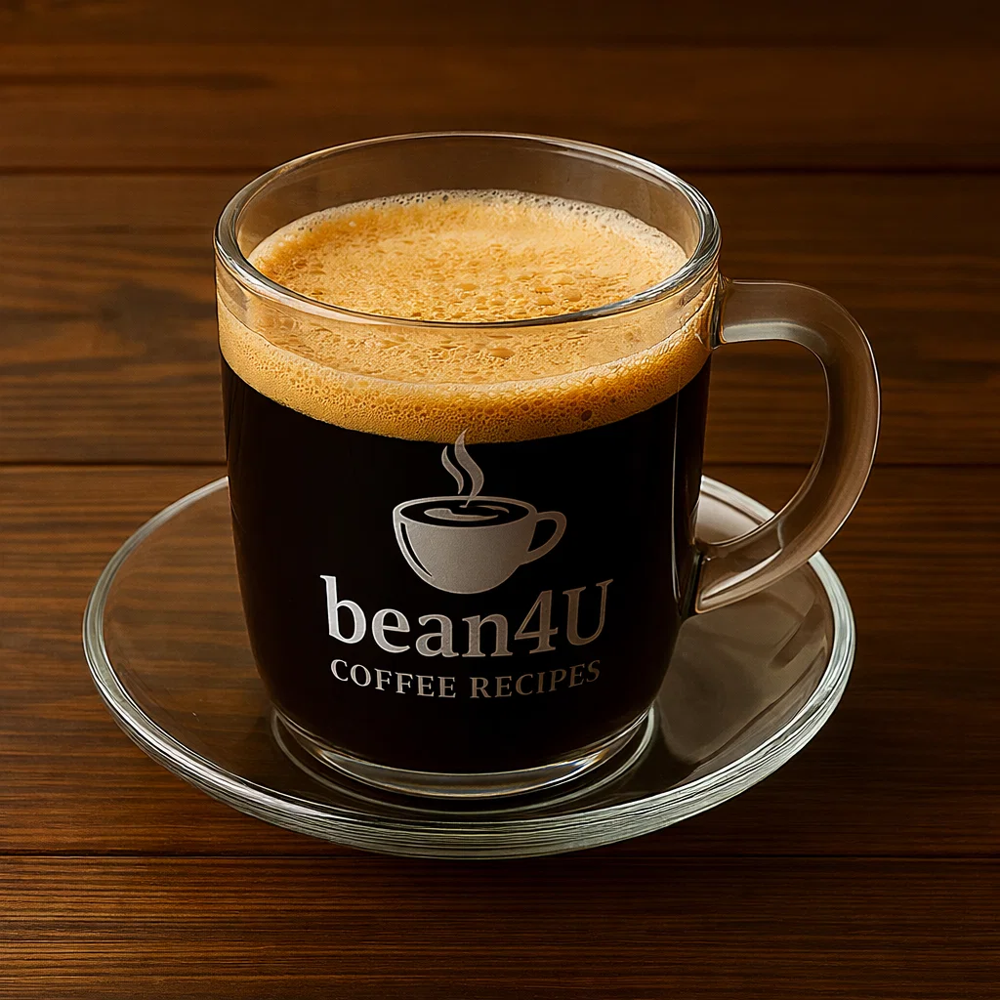

Café Cubano

Ingredients
- 2–3 tbsp finely ground dark roast coffee
- Cold water for espresso machine or stovetop
- 2 tsp sugar (per 1–2 shots) — adjust to taste
Preparation
- Brew a small strong pot of espresso or moka (2 shots).
- In a cup, mix the first small splash of espresso with sugar and whisk until foamy (espuma).
- Pour the rest of the hot espresso over the foam, stir gently and serve.
- youtube short quickly explaining it:
- short Explanation
Video from @cubanflavor
Channel